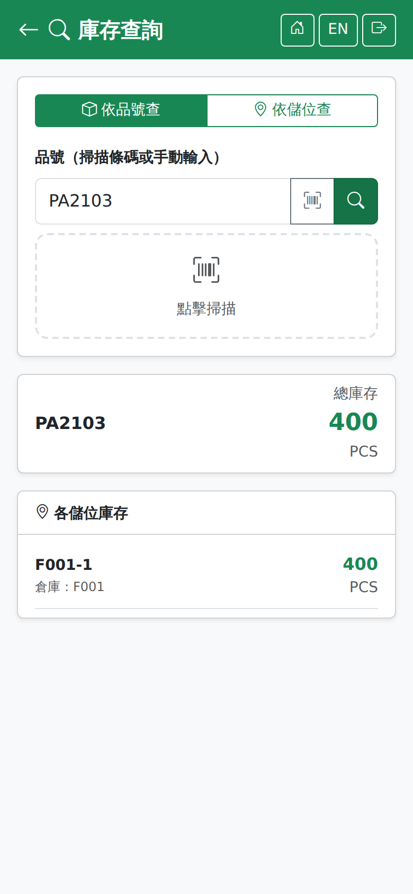

庫存查詢Stock Query
路徑：/mobile/inv/stock.html | 現場即時查品號或儲位的庫存Path: /mobile/inv/stock.html | Checking a product's or a location's stock on the spot
唯讀查詢，不會改變任何庫存。兩種查法：依品號查（這個東西在哪裡）與依儲位查（這個位置有什麼）。A read-only enquiry that changes nothing. Two ways to search: by product (where is this thing) and by location (what is in this place).

庫存查詢畫面（依品號查，顯示總庫存與各儲位明細）Stock query screen (by product, showing the total and the breakdown by location)
兩種查法The two modes
| 模式Mode | 輸入與結果What you enter and what you get |
|---|---|
| 依品號查By Product | 輸入或掃描品號／條碼，結果顯示品號、品名、總庫存，以及「各儲位庫存」——同一個品號分散在哪些倉庫、儲位與批號。也可以掃箱子上的固定 QR（箱號）：結果改為這個箱子目前裝的品號、批號與所在儲位；空箱或不是箱號時照常當品號查。Type or scan the product code or barcode. The result shows the code, the name, the total stock and a by-location breakdown of which warehouses, locations and lots hold it. You can also scan the fixed QR on a box (its box number): the result then shows the item, lot and location of what that box holds now; an empty box or a code that is not a box number is looked up as a product as usual. |
| 依儲位查By Location | 輸入或掃描儲位代碼，結果顯示「各品項庫存」——這個儲位上放了哪些品號、各多少。Type or scan the location code. The result shows a by-product breakdown of what is held at that location and how much of each. |
操作步驟Steps
1
點上方按鈕選擇「依品號查」或「依儲位查」，欄位標題會跟著改變。Choose "By Product" or "By Location" with the buttons at the top; the field label changes with it.
2
手動輸入，或點「點擊掃描」的區塊開相機掃條碼。Type it in, or tap the "Tap to Scan" area to open the camera and scan a barcode.
3
查詢後上方顯示「總庫存」與單位，下方逐列顯示明細，每列標示「倉庫：」與「批：」。The "Total Stock" and its unit appear at the top and the detail lines below, each marked with "WH: "and "Lot: ".
未輸入即查詢會提示「請輸入品號」或「請輸入儲位代碼」；查無資料則顯示「找不到庫存記錄」。Searching with nothing entered warns "Enter product code" or "Enter location code"; when nothing is found it shows "No stock records found".
這裡看到的是各儲位在手量的即時值（預留不分儲位，不在這裡扣；全廠可用請看桌機「庫存餘額」上方的品號彙總）。要看異動歷程（誰在什麼時候動了什麼），請用桌機的「庫存異動明細」畫面。What you see here is the live on-hand quantity per location (reservations are not per location and are not deducted here; for plant-wide availability see the product summary on the desktop Inventory Balance screen). For the history of who moved what and when, use the Stock Movements screen on the desktop.
SmartFactory MES 系統使用手冊 | 如需協助請聯繫系統管理者SmartFactory MES User Manual | Contact your system administrator if you need help